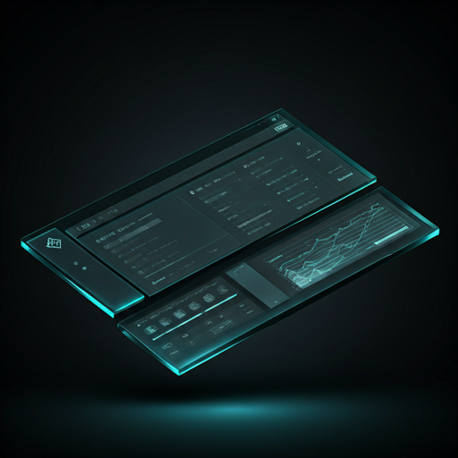

Fricción Cero
Mapeamos el viaje del usuario para eliminar cualquier obstáculo entre su interés y la acción deseada. Interacciones fluidas y llamadas a la acción intuitivas.
Ingeniería visual enfocada en resultados. Combinamos estética premium con psicología del consumidor y velocidad extrema para convertir visitantes en clientes de alto valor.

Cada elemento diseñado para
Convertir
No hacemos páginas web bonitas, construimos máquinas de conversión. Nuestro enfoque UX/UI se basa en datos, empatía y diseño estratégico.
Mapeamos el viaje del usuario para eliminar cualquier obstáculo entre su interés y la acción deseada. Interacciones fluidas y llamadas a la acción intuitivas.
Aplicamos principios de eyetracking y jerarquía visual para guiar la mirada del usuario de forma natural hacia los puntos de conversión clave.
Diseño minimalista estratégico. Presentamos la información justa en el momento adecuado para evitar abrumar al usuario y mantener su atención enfocada.
Código optimizado, carga diferida de recursos e infraestructura edge. Tiempos de carga inferiores a 1 segundo para minimizar el rebote.
Estructura semántica, microdatos y optimización Core Web Vitals desde la primera línea de código para dominar los motores de búsqueda.
Core Web Vitals en verde
Diseño fluido que se adapta perfectamente a cualquier dispositivo.
Palabras que venden. Integramos mensajes persuasivos con la jerarquía visual para crear una narrativa coherente que impulse a la acción inmediata.
Hablemos sobre tu proyecto. Analizaremos tu situación actual y te propondremos una solución de diseño estratégico a medida.
Iniciar Proyecto